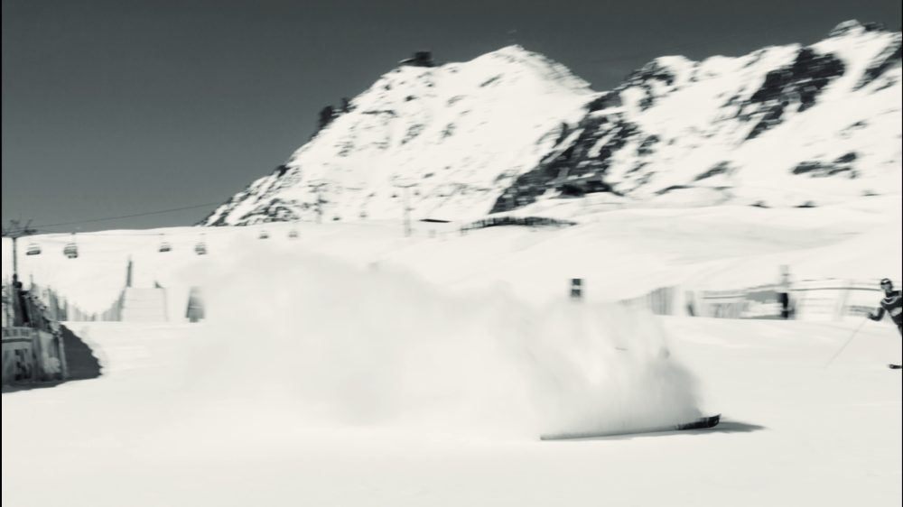
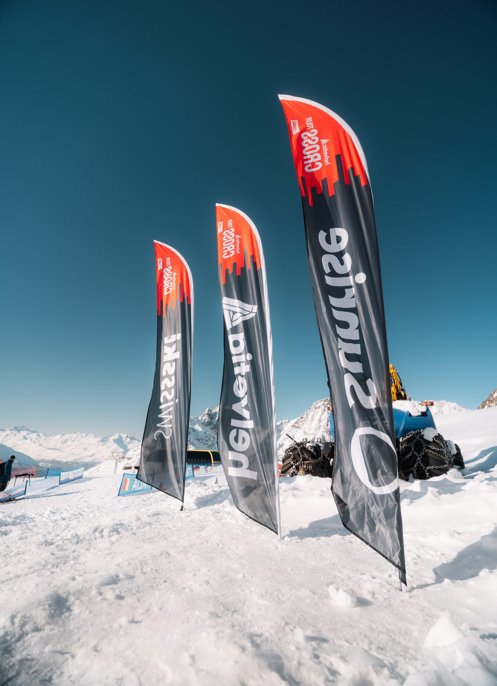
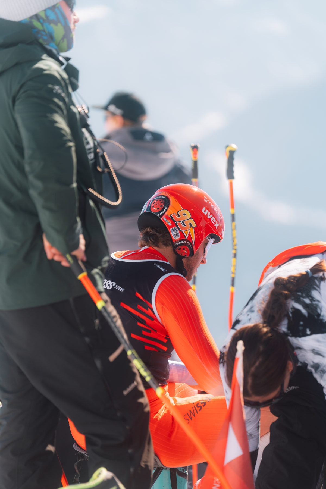

Zurück zu allen Arbeiten
Sport · Event
Swiss-Ski — Junior World Championships
Acht Tage FIS Cross Junior World Championships in St. Moritz — Ski Cross & Snowboard Cross, hautnah mit der Kamera begleitet.








Was wir geliefert haben
Renn- und Actionfotografie
Tägliche Aftermovies & Social-Media-Content
Off-Snow-Content mit dem Team
Cineastisches Gesamt-Aftermovie
Drei Behind-the-Scenes-Reels